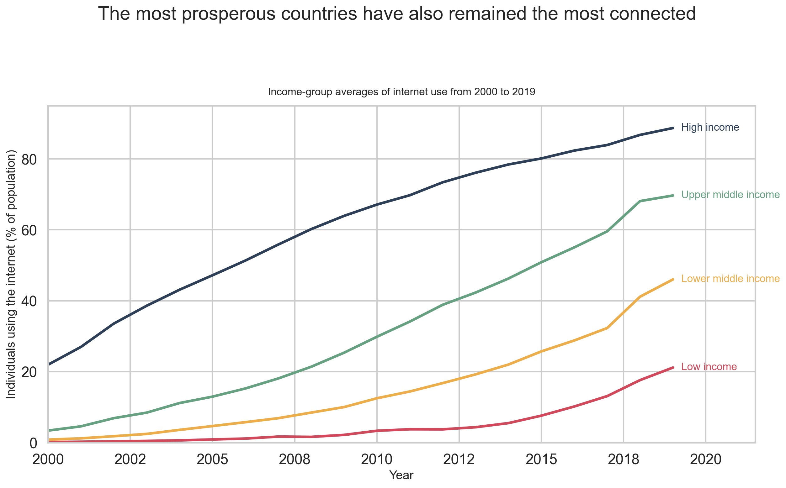
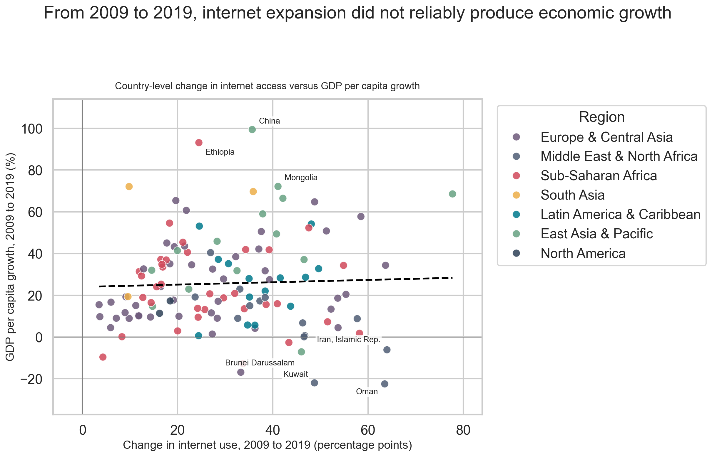

Expanding internet access is essential to economic prosperity.
Data source: World Bank Human Development Indicators, using the
infrastructure and economy-and-growth categories.
For the Proposition
Internet access and income levels rise together

From 2000 to 2019, high-income countries consistently maintained much
higher internet usage rates than lower-income countries.
Design Decisions and Rationale
Score: -1.0 I aggregated countries into
four income groups instead of showing country-level data. That smoothing
hides within-group variation and makes the gap between rich and poor
countries look cleaner and more stable than the underlying country
distribution really is.
Score: -0.5 I framed the chart as a long-run
trend from 2000 to 2019. This encourages viewers to read the separation
between income groups as persistent evidence that connectivity and
prosperity naturally go together, even though the chart does not prove
that one caused the other.
Score: +1.5 I used direct labels on the
lines and added the x-axis label Year with whole-number ticks. Those
choices make the chart easier to read without forcing the viewer to
match colors back to a separate legend or decode awkward decimal
formatting.
Score: +1.0 I kept the y-axis starting near
zero and used a simple percentage scale for internet use. That is a
relatively earnest choice because it preserves the magnitude of the
differences instead of exaggerating them with a truncated axis.
Against the Proposition
Access gains do not reliably translate into GDP growth

From 2009 to 2019, large gains in internet access often failed to
produce comparable GDP per capita growth.
Design Decisions and Rationale
Score: -0.5 I reframed the proposition around
change from 2009 to 2019 instead of country levels. This is persuasive
because it asks whether internet expansion actually paid off economically
in a specific decade, which is a much tougher test than a cross-sectional
snapshot.
Score: +1.0 I kept both axes in familiar
percentage units and added zero reference lines. That makes it easy to
see that many countries expanded access while posting weak or even
negative GDP growth, without requiring viewers to decode transformed
scales.
Score: -1.0 I labeled a small set of
counterexamples such as Oman, Kuwait, Iran, and Brunei Darussalam.
These annotations make the negative cases more memorable, while I leave
unlabeled many countries where internet access and GDP moved upward
together.
Score: +0.5 I used region color to show that
the weak change relationship is not confined to one place. This keeps
the visualization from feeling like it relies on a single outlier, even
though the highlighted examples still guide the reader toward the
anti-proposition interpretation.
Final Reflection
Designing both sides around the same dataset made it clear that persuasion
often comes less from fabrication and more from framing. The strongest
contrast in this project came from switching between a latest-country
cross-section and a change-over-time view. In the first visualization,
internet access and prosperity look tightly linked, especially once the GDP
axis is log-scaled and the broad global pattern is emphasized. In the
second visualization, that same story weakens dramatically once the question
becomes whether internet expansion reliably translated into GDP growth from
2009 to 2019.
What surprised us most was how defensible both views could feel even when
they led to opposite conclusions. We now think ethical visualization is not
just about avoiding obvious lies; it is also about being honest about what
framing choices leave in or leave out. Persuasive choices feel acceptable
when they remain readable, technically justified, and transparent enough
that a careful reader could still reconstruct the broader context. They
become misleading when framing, annotation, or selective emphasis hides
equally plausible interpretations while still appearing authoritative at
first glance.